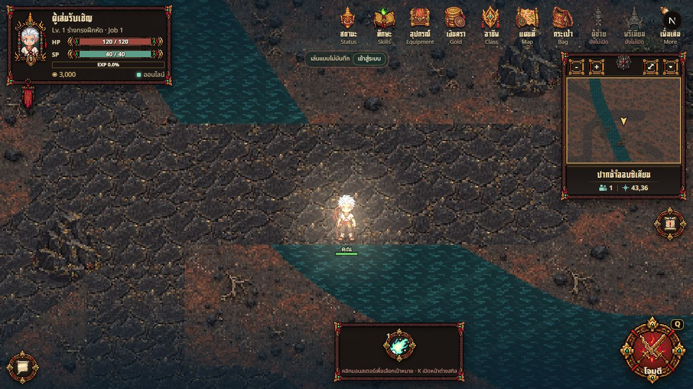

พื้นอินโดนีเซีย — ภาพก่อนและหลังในเกมจริง
ปากน้ำออบซิเดียน พิกัดประมาณ 43,36 · กล้องขนาดเดียวกัน 1280×720 · ภาพหลังอยู่ฝั่งซ้าย เลื่อนแถบเพื่อเทียบรายละเอียดพื้น

หลังปรับก่อนปรับใช้ภาพพื้นต้นฉบับเดิมที่ความละเอียดสูงขึ้น และวาดพื้น 32 พิกเซลต่อหน่วยโลก เทียบกับเดิม 16 พิกเซลแล้วขยาย 2 เท่า ขนาดก้อนหิน ถนน ทางเดิน และระบบชนเดิมคงอยู่ การเปลี่ยนนี้ใช้ร่วมกันทั้ง 3 แมพอินโดนีเซีย
น้ำ หมอก ตัวละคร และ HUD เคลื่อนไหวระหว่างการบันทึก ภาพจึงไม่ตรงกันทุกพิกเซล ไม่มีการเจนภาพใหม่